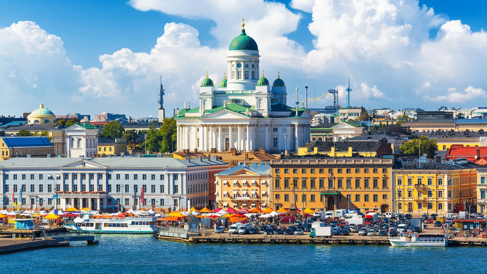
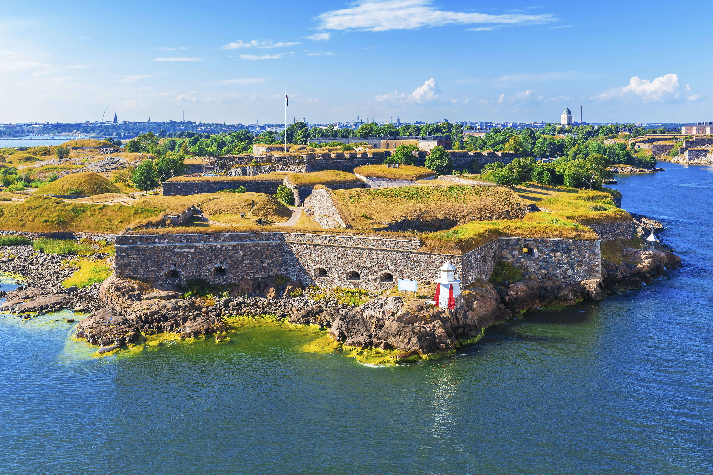
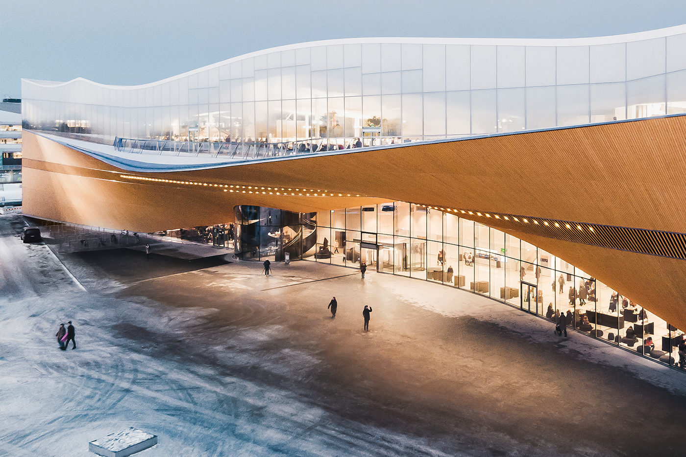
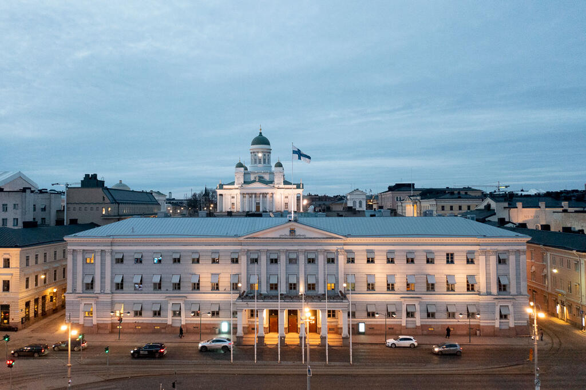
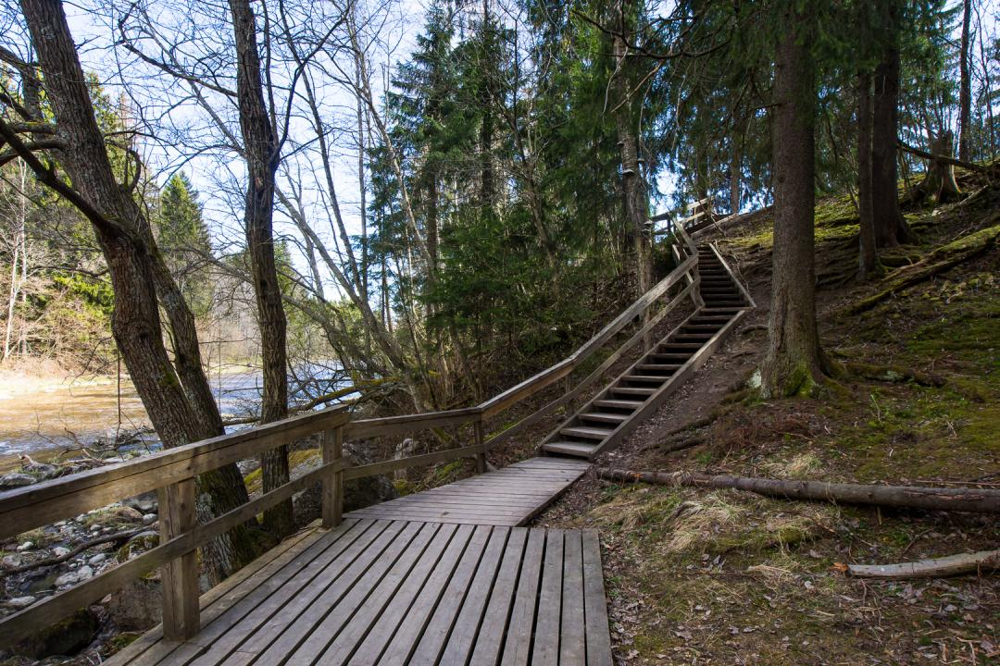

Guia de viajes por europa
Viaje destacado de hoy: Helsinki

Helsinki es la capital y la ciudad más grande de Finlandia. Está ubicada en la costa sur del país, a orillas
del Golfo
de Finlandia, que es parte del Mar Báltico. Helsinki es el centro político, económico, cultural y social de
Finlandia y
es conocida por su alta calidad de vida y su hermoso entorno natural.
Helsinki es también un importante centro educativo y de investigación, con varias universidades
y una población diversa y multicultural. La ciudad es conocida por su diseño elegante y su enfoque en la
tecnología y la innovación, albergando numerosas empresas de tecnología y startups.
Algunos puntos de interés en Helsinki incluyen:
- La Catedral de Helsinki (Helsingin tuomiokirkko):
Un icónico edificio neoclásico ubicado en el centro de la ciudad.
- La Fortaleza de Suomenlinna (Suomenlinna): Una fortaleza marítima en una isla
frente a la costa de Helsinki, declarada Patrimonio de la Humanidad por la UNESCO.
- La biblioteca publica Helsinki conocida como Helsingin kaupunginkirjasto
es una impresionante estructura de arquitectura contemporánea que se ha convertido en un símbolo de la ciudad.
Ofrece una amplia gama de servicios y recursos para la comunidad, incluyendo una amplia colección de libros,
espacios de lectura, salas de estudio etc.
-
El edificio del Ayuntamiento de Helsinki, conocido como "Helsingin kaupungintalo"
en finlandés, es un hermoso
edificio de estilo neorrenacentista ubicado en el centro de la ciudad, cerca de la plaza del Senado. Es un
importante símbolo de la administración local en Helsinki y un lugar donde se llevan a cabo reuniones y
decisiones relacionadas con la ciudad.
-
El Parque Central de Helsinki (Keskuspuisto): Un extenso parque forestal que se extiende por el centro de la
ciudad, ofreciendo oportunidades para practicar senderismo, ciclismo y otras actividades al aire libre.




El tiempo en Helsinki
Estas son unas de las temperaturas aproximadas para cada mes del año, así podras
planificar tus visita en el mejor mes
| Mes |
Temperatura media (Cº) |
Precipitación (mm) |
| Enero |
-6º |
38 |
| Febrero |
-7º |
30 |
| Marzo |
-3º |
30 |
| Abril |
4º |
27 |
| Mayo |
11º |
30 |
| Junio |
16º |
40 |
| Julio |
19º |
45 |
| Agosto |
17º |
48 |
| Setiembre |
12º |
42 |
| Octubre |
-7º |
50 |
| Noviembre |
-1º |
53 |
| Diciembre |
-5º |
48 |
Aquí tienes unos enlaces donde puedes encontrar mas informacion sobre Helsinki:
- Visit Helsinki
- Google flights
- Lonely planet